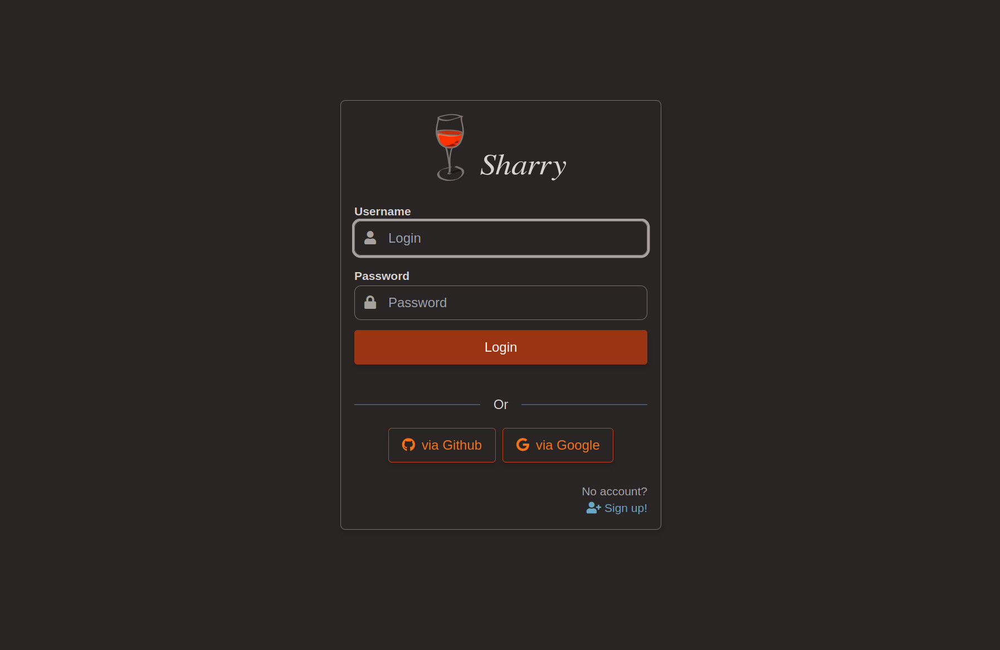

Configuring
Sharry’s executable can take one argument – a configuration file. If that is not given, the defaults are used. The config file overrides default values, so only values that differ from the defaults are necessary to specify.
File Format
The format of the configuration files can be HOCON, JSON or whatever the used config library understands. The default values below are in HOCON format, which is recommended, since it allows comments and has some advanced features. Please refer to their documentation for more on this.
Important Config Options
The configuration for the REST server is below sharry.restserver.
JDBC
This configures the connection to the database. By default, a H2
database in the current /tmp directory is configured. This will
create the database on demand in this directory.
The config looks like this:
sharry.restserver.backend.jdbc {
url = ...
user = ...
password = ...
}
The url is the connection to the database. It must start with
jdbc, followed by name of the database. The rest is specific to the
database used: it is either a path to a file for H2 or a host/database
url for MariaDB and PostgreSQL.
When using H2, the user is sa, the password can be empty and the url
must include these options:
;MODE=PostgreSQL;DATABASE_TO_LOWER=TRUE
Examples
PostgreSQL:
url = "jdbc:postgresql://localhost:5432/sharrydb"
MariaDB:
url = "jdbc:mariadb://localhost:3306/sharrydb"
H2
url = "jdbc:h2:///path/to/a/file.db;MODE=PostgreSQL;DATABASE_TO_LOWER=TRUE"
Database Checks
The setting database-domain-checks is used when inspecting errors
that happen when uploading files. It allows to translate database
error messages into a message that is presented to the end user.
Please see this issue for more information and motivation.
The example provided is this:
sharry.restserver.backend.share {
# Allows additional database checks to be translated into some
# meaningful message to the user.
#
# This config is used when inspecting database error messages.
# If the error message from the database contains the defined
# `native` part, then the server returns a 422 with the error
# messages given here as `message`.
#
# See issue https://github.com/eikek/sharry/issues/255 – the
# example is a virus check via a postgresql extension "snakeoil".
database-domain-checks = [
# Example: This message originates from postgres with an
# enabled snakeoil extension. This extension allows to virus
# check byte arrays. It must be setup such that the `bytea`
# type of the filechunk table is changed to the type
# `safe_bytea`:
#
# CREATE EXTENSION pg_snakeoil;
# CREATE DOMAIN public.safe_bytea as bytea CHECK (not so_is_infected(value));
# ALTER TABLE public.filechunk ALTER COLUMN chunkdata TYPE safe_bytea;
{ enabled = false
native = "domain safe_bytea violates check constraint"
message = "The uploaded file contains a virus!"
}
]
}
Example for Snakeoil
The extension snakeoil for PostgreSQL allows to check uploaded binary data for viruses.
In order to use this, you need to change the data type for the binary files. This must be applied after sharry has started at least once to initialize its database!
The following steps must be done manually:
- install pg_snakeoil - e.g. on ubuntu systems package: postgresql-12-snakeoil
- execute the following sql commands on the sharry postgres database:
CREATE EXTENSION pg_snakeoil; CREATE DOMAIN public.safe_bytea as bytea check (not so_is_infected(value)); ALTER TABLE public.filechunk ALTER COLUMN chunkdata TYPE safe_bytea;
Then add the above setting into your config file. Test files can be found here.
Bind
The host and port the http server binds to.
sharry.restserver.bind {
address = localhost
port = 9090
}
By default, it binds to localhost and some predefined port.
Base-url
The base url is an important setting that defines the URL where sharry can be reached (the external url). The REST server uses it to create absolute urls and to configure the authenication cookie. These URLs are sent to the client, so they must resolve back to the sharry server. If you see “network error” error messages in the browser, then this setting is probably not correct.
By default it is set to http://localhost:9090. If you leave it at
localhost, then sharry uses the request to obtain the real external
url dynamically by inspecting http headers and finally falling back to
the bind.address|port.
However, if you have a single external url, it is recommended to set this here.
Examples
sharry.restserver.base-url = "https://sharry.example.com"
Registration Options
This defines if and how new users can create accounts. There are 3 options:
- closed no new user can sign up
- open new users can sign up
- invite new users can sign up but require an invitation key
sharry.restserver.backend.signup {
mode = "open"
# If mode == 'invite', a password must be provided to generate
# invitation keys. It must not be empty.
invite-password = ""
# If mode == 'invite', this is the period an invitation token is
# considered valid.
invite-time = "3 days"
}
The mode invite is intended to open the application only to some
users. An admin user can create invitation keys and distribute them to
the desired people. While the user must be admin, it is also necessary
to provide the invite-password. The idea is that only the person who
installs sharry knows this. If it is not set (must be non-empty), then
invitation won’t work. New invitation keys can be generated from
within the web application or via REST calls (using curl, for
example).
curl -X POST -H 'Sharry-Auth: ' -d '{"password":"blabla"}' "http://localhost:7880/api/v1/open/signup/newinvite"
Authentication
The initial authentication will generate an authentication token which is valid for some time. Subsequent calls to secured routes can use this token. The token can be given as a normal http header or via a cookie header.
The following options configure this token:
sharry.restserver.backend.auth {
server-secret = "hex:caffee" # or "b64:Y2FmZmVlCg=="
session-valid = "8 minutes"
}
The server-secret is used to sign the token. If multiple REST
servers are deployed, all must share the same server secret. Otherwise
tokens from one instance are not valid on another instance. The secret
can be given as Base64 encoded string or in hex form. Use the prefix
hex: and b64:, respectively. If these prefixes are missing, the
string’s utf8 bytes are used.
The session-valid deterimens how long a token is valid. This can be
just some minutes, the web application obtains new ones
periodically. So a rather short time is recommended.
The interval the webapp retrieves a new token can be configured, too.
It must be at least 30s below the session-valid time.
sharry.restserver.webapp {
auth-renewal = "4 minutes"
}
Login Modules
Login modules are used to initially authenticate a user given some
credentials. There are some modules that take a username/password pair
and hand it to an external service or program for verification. If
valid, sharry creates an account transparently. Then there is the
oauth setting which supports authentication via OAuth using “OAuth
Code Flow”.
All login modules can be enabled/disabled and have an order property
that defines the order the login modules are tried. The modules are
tried in the specified order until one gives a response.
Fixed
This is a simple login module for bootstrapping. It defines an admin account using the supplied username and password (plain text) from the config file.
fixed {
enabled = false
user = "admin"
password = "admin"
order = 10
}
It is disabled by default. If the given username doesn’t match the configured username this login module is skipped and the next is tried.
Http
The http login module issues a http request with the username/password pair as payload. The response status code determines valid authentication.
http {
enabled = false
url = "http://localhost:1234/auth?user={{user}}&password={{pass}}"
method = "POST"
body = ""
content-type = ""
order = 20
}
If the method is POST, the body is sent as specified using the given
content type. The body and url are processed before as mustache
templates, where {{user}} and {{pass}} are replaced by their actual values. For other
requests than POST, the body is ignored.
Http Basic
The http-basic login module issues a http request with an
Authorization header against some configured url. The header uses
the Basic
scheme to transport the username/password pair.
http-basic {
enabled = false
url = "http://somehost:2345/path"
method = "GET"
order = 30
}
If the response is successful (in 2xx), the user is authenticated.
Command
Allows to validate a username/password pair using some external system command. This is the most flexible approach.
command {
enabled = false
program = [
"/path/to/someprogram"
"{{login}}"
"{{pass}}"
]
# the return code to consider successful verification
success = 0
order = 30
}
The return code of the command is used to determine valid
authentication. The program value is an array where the first item
is the path to the program and subsequent elements define its
arguments.
All arguments are processed as a mustache template and variables {{user}} and {{pass}} are
replaced by their actual values.
Internal
The internal login module simply authenticates against the sharry database. If it is disabled, you should disable signup, too, because those user won’t be authenticated.
OAuth
There is now an option to authenticate using a external provider supporting the OAuth “code flow”. There are two examples in the config file for Github and Google. I tried to generalise it as much as possible, but (it seems to me) OAuth is not really a protocol, every provider may choose to do it little differently.
The oauth login module can be configured with multiple such
providers. Here is an example:
oauth = [
{
enabled = false
id = "github"
name = "Github"
icon = "fab fa-github"
authorize-url = "https://github.com/login/oauth/authorize"
token-url = "https://github.com/login/oauth/access_token"
user-url = "https://api.github.com/user"
user-id-key = "login"
client-id = "<your client id>"
client-secret = "<your client secret>"
}
]
Each such entry in the array results in a button on the login screen.

Here is how it roughly works: If a user clicks this button, it reaches a specific url in sharry. Sharry will read the corresponding config entry and redirect to the provider adding all the necessary details. The user then authenticates at the provider, which redirects back to sharry – so this method only works if sharry is publicly available, obviously. Then sharry does one more request to turn the code from the redirect into a different code. And then it tries to get the account name.
Let’s go through the config values of one entry:
enabled: allows to disable this entry without removing it from the file.id: the id that is used in the url behind the button on the login screen. It is also used to amend the account name.name: The name rendered as button text.icon: a fontawesome (free) icon name for the buttonauthorize-urlthis is the URL of the provider where sharry redirects to at first, attachingclient_idand the redirect uri back to sharry.token-url: The url to the provdier where the response from theauthorize-urlcan be turned into a token.user-url: The url to the provider that retrieves the user information given a token as obtained fromtoken-url.user-id-key: Now it get’s a bit hairy…. The protocol doesn’t define (afaik) a common way how to exchange user data. So google does it different from github. Sharry supports JSON responses only and uses the value ofuser-id-keyto lookup a value in that response structure. For example, the github response is a simple JSON object, where the login name is at fieldlogin. The path must evaluate to a string. This value is used for the new account inside sharry.client-idandclient-secretThese are provider specific values that you need to obtain there. With github, for example, you register a new “app” which generates these values.
Once sharry gets the account name, it creates a new account (if it not
exists already) using the account name from the provider amended with
@<id>.
I only tested this with github and google, I would appreciate any information on how it works with other providers.
Cleanup
Sharry has a periodic cleanup job that will delete ‘invalid’
resources. This cleanup job runs in the backend and is triggered
by a timer every interval as defined in the cleanup block. It
cleans up the following resources:
- Expired, published shares and their files are removed once the
expiration datetime is older than
invalid-agedefined in thecleanupblock. - Expired invites are removed based on the
invite-timefrom thesignupblock. - Orphaned files are removed. However, orphaned files should not happen as long as all shares and files are maintained by only sharry and not any external modifications.
Default Config
sharry.restserver {
# This is the base URL this application is deployed to. This is used
# to create absolute URLs and to configure the cookie.
#
# Note: Currently deploying behind a path is not supported. The URL
# should not end in a slash.
base-url = "http://localhost:9090"
# Where the server binds to.
bind {
address = "localhost"
port = 9090
}
# The time from receiving a request until the first line of the
# response is rendered. When uploading big chunks on slow
# connections, this may have to be increased (or the
# `webapp.chunk-size' decreased).
response-timeout = "4 minutes"
# The alias-member feature allows to add users to an alias page to
# automatically make all shares that were uploaded through the
# corresponding alias available to all members. This allows to
# search for other users via a http call. If this feature is
# disabled, the rest call to search other users is disabled and the
# form element is removed from the ui.
alias-member-enabled = true
webapp {
# This is shown in the top right corner of the web application
app-name = "Sharry"
# The icon next to the app-name. Needs to be an URL to an image.
app-icon = ""
# The icon next to the app-name when dark mode is enabled.
app-icon-dark = ""
# The login and register pages display a logo image, by default
# the Sharry logo. This can be changed here. It needs to be an URL
# to an image.
app-logo = ""
# The login and register pages display a logo image. This is the
# one used when dark mode is enabled.
app-logo-dark = ""
# This is markdown that is inserted as the footer on each page in
# the ui. If left empty, a link to the project is rendered.
app-footer = ""
# Whether to display the footer on each page in the ui. Set it to
# false to hide it.
app-footer-visible = true
# Chunk size used for one request. The server will re-chunk the
# stream into smaller chunks. But the client can transfer more in
# one requests, resulting in faster uploads.
#
# You might need to adjust this value depending on your setup. A
# higher value usually means faster uploads (if the up-link is
# good enough). It is set rather low by default, because it is a
# safer default.
chunk-size = "10M"
# Number of milliseconds the client should wait before doing a new
# upload attempt after something failed. The length of the array
# denotes the number of retries.
retry-delays = [0, 3000, 6000, 12000, 24000, 48000]
# The login page can display a welcome message that is readable by
# everyone. The text is processed as markdown.
welcome-message = ""
# The ISO-3166-1 code of the default language to use. If a invalid
# code is given (or one where no language is available), it falls
# back to "gb".
default-language = "gb"
# The interval a new authentication token is retrieved. This must
# be at least 30s lower than `backend.auth.session-valid'.
auth-renewal = "4 minutes"
# The initial page to go to after logging in. It can be one of the
# following: home, uploads, share
initial-page = "home"
# The value for the validity that is preselected. Only values that
# are available in the dropdown are possible to specifiy.
default-validity = 7 days
# The inital ui theme to use. Can be either 'light' or 'dark'.
initial-theme = "light"
}
backend {
# Authentication is flexible to let Sharry be integrated in other
# environments.
auth {
# The secret for this server that is used to sign the authenicator
# tokens. You can use base64 or hex strings (prefix with b64: and
# hex:, respectively)
server-secret = "hex:caffee"
# How long an authentication token is valid. The web application
# will get a new one periodically.
session-valid = "8 minutes"
#### Login Modules
##
## The following settings configure how users are authenticated.
## There are several ways possible. The simplest is to
## authenticate agains the internal database. But often there is
## already a user management component and sharry can be
## configured to authenticated against other services.
# A fixed login module simply checks the username and password
# agains the information provided here. This only applies if the
# user matches, otherwise the next login module is tried.
fixed {
enabled = false
user = "admin"
password = "admin"
order = 10
}
# The http authentication module sends the username and password
# via a HTTP request and uses the response to indicate success or
# failure.
#
# If the method is POST, the `body' is sent with the request and
# the `content-type' is used.
http {
enabled = false
url = "http://localhost:1234/auth?user={{user}}&password={{pass}}"
method = "POST"
body = ""
content-type = ""
order = 20
}
# Use HTTP Basic authentication. An Authorization header using
# the Basic scheme is created and the request is send to the
# given url. The response body will be ignored, only the status
# is inspected.
http-basic {
enabled = false
url = "http://somehost:2345/path"
method = "GET"
order = 30
}
# The command authentication module runs an external command
# giving it the username and password. The return code indicates
# success or failure.
command {
enabled = false
program = [
"/path/to/someprogram"
"{{user}}"
"{{pass}}"
]
# the return code to consider successful verification
success = 0
order = 40
}
# The internal authentication module checks against the internal
# database.
internal {
enabled = true
order = 50
}
# Uses OAuth2 "Code-Flow" for authentication against a
# configured provider.
#
# A provider (like Github or Google for example) must be
# configured correctly for this to work. Each element in the array
# results into a button on the login page.
#
# Examples for Github and Google are provided below. You need to
# setup an “application” to obtain a client_secret and clien_id.
#
# Details:
# - enabled: allows to toggle it on or off
# - id: a unique id that is part of the url
# - name: a name that is displayed inside the button on the
# login screen
# - icon: a fontawesome icon name for the button
# - authorize-url: the url of the provider where the user can
# login and grant the permission to retrieve the user name
# - token-url: the url used to obtain a bearer token using the
# response from the authentication above. The response from
# the provider must be json or url-form-encdode.
# - user-url: the url to finalyy retrieve user information –
# only JSON responses are supported.
# - user-id-key: the name of the field in the json response
# denoting the user name
oauth = [
{
enabled = false
id = "github"
name = "Github"
icon = "fab fa-github"
authorize-url = "https://github.com/login/oauth/authorize"
token-url = "https://github.com/login/oauth/access_token"
user-url = "https://api.github.com/user"
user-id-key = "login"
client-id = "<your client id>"
client-secret = "<your client secret>"
},
{
enabled = false
id = "google"
name = "Google"
icon = "fab fa-google"
authorize-url = "https://accounts.google.com/o/oauth2/v2/auth?scope=https://www.googleapis.com/auth/userinfo.profile"
token-url = "https://oauth2.googleapis.com/token"
user-url = "https://www.googleapis.com/oauth2/v1/userinfo?alt=json"
user-id-key = "name"
client-id = "<your client id>"
client-secret = "<your client secret>"
}
]
}
# The database connection.
#
# By default a H2 file-based database is configured. You can
# provide a postgresql or mariadb connection here. When using H2
# use the PostgreSQL compatibility mode.
jdbc {
url = "jdbc:h2://"${java.io.tmpdir}"/sharry-demo.db;MODE=PostgreSQL;DATABASE_TO_LOWER=TRUE"
user = "sa"
password = ""
}
# Configuration for registering new users at the local database.
# Accounts registered here are checked via the `internal'
# authentication plugin as described above.
signup {
# The mode defines if new users can signup or not. It can have
# three values:
#
# - open: every new user can sign up
# - invite: new users can sign up only if they provide a correct
# invitation key. Invitation keys can be generated by an admin.
# - closed: signing up is disabled.
mode = "open"
# If mode == 'invite', this is the period an invitation token is
# considered valid.
invite-time = "14 days"
# A password that is required when generating invitation keys.
# This is more to protect against accidentally creating
# invitation keys. Generating such keys is only permitted to
# admin users.
invite-password = "generate-invite"
}
share {
# When storing binary data use chunks of this size.
chunk-size = "512K"
# Maximum size of a share.
max-size = "1.5G"
# Maximum validity for uploads
max-validity = 365 days
# Allows additional database checks to be translated into some
# meaningful message to the user.
#
# This config is used when inspecting database error messages.
# If the error message from the database contains the defined
# `native` part, then the server returns a 422 with the error
# messages given here as `message`.
#
# See issue https://github.com/eikek/sharry/issues/255 – the
# example is a virus check via a postgresql extension "snakeoil".
database-domain-checks = [
# Example: This message originates from postgres with an
# enabled snakeoil extension. This extension allows to virus
# check byte arrays. It must be setup such that the `bytea`
# type of the filechunk table is changed to the type
# `safe_bytea`:
#
# CREATE EXTENSION pg_snakeoil;
# CREATE DOMAIN public.safe_bytea as bytea CHECK (not so_is_infected(value));
# ALTER TABLE public.filechunk ALTER COLUMN chunkdata TYPE safe_bytea;
{ enabled = false
native = "domain safe_bytea violates check constraint"
message = "The uploaded file contains a virus!"
}
]
}
cleanup {
# Whether to enable the cleanup job that periodically
# cleans up published, expired shares and expired invites
enabled = true
# The interval for the cleanup job
interval = 14 days
# Time of published shares past expiration to get collected by cleanup job
invalid-age = 7 days
}
mail {
# Enable/Disable the mail feature.
#
# If it is disabled, the server will not send mails, including
# notifications.
#
# If enabled, explicit SMTP settings must be provided.
enabled = false
# The SMTP settings that are used to sent mails with.
smtp {
# Host and port of the SMTP server
host = "localhost"
port = 25
# User credentials to authenticate at the server. If the user
# is empty, mails are sent without authentication.
user = ""
password = ""
# One of: none, starttls, ssl
ssl-type = "starttls"
# In case of self-signed certificates or other problems like
# that, checking certificates can be disabled.
check-certificates = true
# Timeout for mail commands.
timeout = "10 seconds"
# The default mail address used for the `From' field.
#
# If left empty, the e-mail address of the current user is used.
default-from = ""
# When creating mails, the List-Id header is set to this value.
#
# This helps identifying these mails in muas. If it is empty,
# the header is not set.
list-id = "Sharry"
}
templates = {
download = {
subject = "Download ready."
body = """Hello,
there are some files for you to download. Visit this link:
{{{url}}}
{{#password}}
The required password will be sent by other means.
{{/password}}
Greetings,
{{user}} via Sharry
"""
}
alias = {
subject = "Link for Upload"
body = """Hello,
please use the following link to sent files to me:
{{{url}}}
Greetings,
{{user}} via Sharry
"""
}
upload-notify = {
subject = "[Sharry] Files arrived"
body = """Hello {{user}},
there have been files uploaded for you via the alias '{{aliasName}}'.
View it here:
{{{url}}}
Greetings,
Sharry
"""
}
}
}
}
}
Logging
By default, sharry logs to stdout. This works well, when managed by systemd or other inits. Logging is done by logback. Please refer to its documentation for how to configure logging.
If you created your logback config file, it can be added as argument to the executable using this syntax:
/path/to/sharry -Dlogback.configurationFile=/path/to/your/logging-config-file
To get started, the default config looks like this:
<configuration>
<appender name="STDOUT" class="ch.qos.logback.core.ConsoleAppender">
<withJansi>true</withJansi>
<encoder>
<pattern>[%thread] %highlight(%-5level) %cyan(%logger{15}) - %msg %n</pattern>
</encoder>
</appender>
<logger name="sharry" level="debug" />
<root level="INFO">
<appender-ref ref="STDOUT" />
</root>
</configuration>
The <root level="INFO"> means, that only log statements with level
“INFO” will be printed. But the <logger name="sharry"
level="debug"> above says, that for loggers with name “sharry”
statements from level “DEBUG” on will be printed, too.